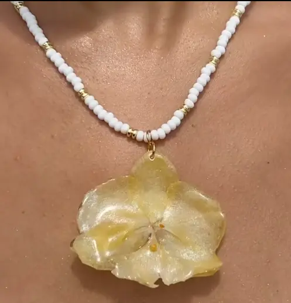
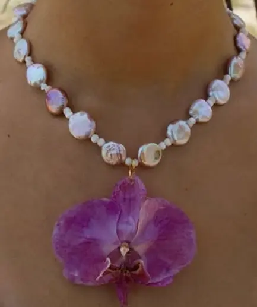
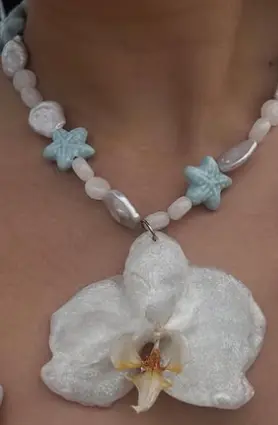
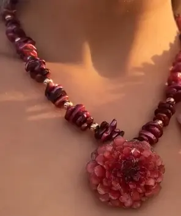

Collar "Flor de Miel"

Precio: $35.00 USD
Disponibilidad: En stock (2 unidades)
Materiales: Flor de orquídea preservada en resina, chaquiras blancas, separadores dorados.
Largo: ~45 cm
Descripción: Collar artesanal con flor de orquídea natural preservada en resina
transparente.
¿Quieres personalizarlo? Solicita
Collar "Flor Morada"

Precio: $35.00 USD
Disponibilidad: En stock (1 unidad)
Materiales: Flor de orquídea morada preservada en resina, perlas barrocas naturales,
chaquiras pequeñas blancas, gancho dorado.
Largo: 50 cm
Descripción: Una pieza elegante y romántica que combina la belleza natural de la flor con el
lujo de la perla.
¿Quieres personalizarlo? Solicita
Collar "Flor Marina"

Precio: $35.00 USD
Disponibilidad: En stock (3 unidades)
Materiales: Flor de orquídea blanca preservada en resina con detalles glitter, perlas
ovaladas rosadas, estrellas de mar cerámicas en azul turquesa, conector plateado.
Descripción: Collar artesanal inspirado en el mar, con una delicada orquídea blanca con
detalles brillantes preservada en resina.
Largo: 42 cm
¿Quieres personalizarlo? Solicita
Collar "Flor Vino"

Precio: $40.00 USD
Disponibilidad: Agotado
Materiales: Flor preservada en resina en tonos rojizos, piedras naturales irregulares en
rojo y negro, perlas pequeñas doradas, conector dorado.
Largo: 47 cm
Descripción: Collar artesanal de carácter apasionado, con una flor preservada en resina de
capas rojas.
Agotado por el momento.
Información de Compra:
- Métodos de pago: PayPal, transferencia bancaria, Venmo, Zelle
- Envíos: Puerto Rico y Estados Unidos
- Tiempo de entrega: 5 a 10 días laborables
- Empaque: Caja artesanal incluida sin costo adicional
- Devoluciones: No aplica en piezas personalizadas; piezas estándar tienen 7 días de
devolución